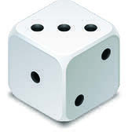
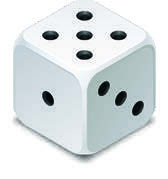

PARA SABER QUANTO UMA COSTUREIRA COBRA A MAIS DO QUE A OUTRA,
PRECISAMOS COMPARAR OS DOIS VALORES.
PRATICANDO
1)
O PROFESSOR DE UMA ESCOLA ORGANIZOU UM ESPAÇO PARA LEITURA COM 13 LIVROS.
OS ESTUDANTES APROVARAM A IDEIA E TROUXERAM OUTROS 31 LIVROS.
NO TOTAL, QUANTOS LIVROS TEM ESSE ESPAÇO?
44 livros
2)
EM UMA PRATELEIRA HÁ 18 LIVROS, 7 SÃO DE SUSPENSE E OS OUTROS SÃO ROMANCES.
QUANTOS LIVROS DE ROMANCE ESTÃO NESSA PRATELEIRA?
11 livros
3)
ESTOU LENDO UM LIVRO DE 72 PÁGINAS E ESTOU NA PÁGINA 50.
QUANTAS PÁGINAS FALTAM PARA EU TERMINAR A LEITURA?
22 páginas
TROCANDO IDEIAS
JUNTE-SE A UM COLEGA PARA JOGAR FORME 10.
PARA ESSE JOGO, VOCÊS VÃO PRECISAR DE 2 DADOS, E CADA UM DEVERÁ USAR 1 ÁBACO E ARGOLAS.
REGRAS: DECIDAM NO PAR OU ÍMPAR QUEM COMEÇA A PARTIDA.
PARA JOGAR, LANCE OS DADOS, SOME O TOTAL DE PONTOS OBTIDOS E COLOQUE AS ARGOLAS CORRESPONDENTES NO PINO DAS UNIDADES (OU DAS DEZENAS) DO ÁBACO.


Editoria de Arte
C
D
U
ALGO A MAIS
Para conhecer mais sobre o ábaco, que é uma invenção milenar japonesa, leia o texto: Ábaco, a milenar ferramenta de cálculo usada no Japão para reforçar a memória (disponível em: https://www.bbc.com/portuguese/curiosidades-57442144, acesso em: 23 abr. 2024).
Práticas de Alfabetização e de Matemática